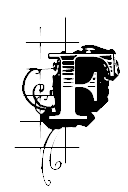

abrice quên tất cả những ý nghĩa nghiêm túc khi con người dễ ưa đó bất ngờ xuất hiện. Anh bắt đầu một cuộc đời vui vẻ và yên lành bậc nhất ở Bologne. Cái khuynh hướng dễ dãi vui đâu chầu đó thấm vào những bức thư anh gửi cho công tước phu nhân, đến nỗi bà giận. Fabrice chỉ cảm thấy lờ mờ điều đó; tuy nhiên anh ghi tắt trên mặt đồng hồ anh: Khi viết cho bà C. T đừng bao giờ nói khi tôi còn là Linh mục, khi tôi còn là cố đạo, điều đó làm bà giận. Anh mua hai con ngựa nhỏ rất vừa ý: Mỗi khi cô bé Marietta muốn đi xem một thắng cảnh nào trong vùng quanh Bologne, anh mướn một cỗ xe và thắng hai con ngựa đó. Hầu như chiều nào anh cũng đưa ả đến thác Reno! Lúc về, anh dừng lại ở nhà bác Crescentini, con người đáng mến coi gần như là bố Marietta.
— Nói thật, cuộc sống ở quán cà phê mà ngày xưa ta tưởng là lố bịch, nếu ta mà biết nó như thế này thì từ chối là một sai lầm! Fabrice tự bảo. Anh quên rằng anh có đi vào hiệu cà phê thì cũng chỉ là để đọc tờ báo Người lập hiến mà thôi, và anh vẫn hoàn toàn xa lạ với xã hội ăn diện ở Bologne, những trò giải trí, đua đòi rởm không tác động gì đến cảnh hạnh phúc hiện nay của anh. Khi anh không đi với Marietta thì anh đến tòa khâm thiên giám để học lớp thiên văn học; ông giáo sư thương mến anh, còn anh thì cho ông mượn ngựa ngày chủ nhật để đi diện bảnh cùng với vợ ở con đường dạo mát khu Montagnola.
Fabrice rất thù ghét việc làm khổ kẻ khác dù kẻ đó không đáng quý trọng đến thế nào. Marietta tuyệt nhiên không muốn cho anh gặp mụ bảo mẫu, nhưng một hôm, trong lúc ả đi lễ nhà thờ thì anh đến chỗ mụ. Mụ giận chín người khi thấy anh vào. Fabrice tự bảo: “Đúng là lúc cần phải lên mặt kẻ cả đây!”. Với dáng điệu của một thanh niên Paris tự trọng khi vào ban công rạp Trò hề, anh lớn tiếng hỏi:
— Cô bé Marietta lương tháng bao nhiêu được tuyển vào đoàn?
— Năm mươi écu.
— Bà nói dối như thường lệ. Hãy nói thật, nếu không, tôi nói có trời làm chứng, bà sẽ chẳng được đồng xu nhỏ nào.
— Thế thì cô ấy lĩnh hăm hai écu trong đoàn kịch ở Parme của chúng tôi, khi chúng tôi rủi ro gặp ông. Tôi thì được trả mười hai écu và chúng tôi cho Giletti người che chở chúng tôi, mỗi đứa một phần ba số tiền kiếm được. Mỗi tháng Giletti trích ra mua biếu Marietta một món quà khoảng vài écu.
— Bà vẫn cứ nói dối, bà chỉ lĩnh bốn écu thôi. Nhưng nếu bà đối xử tốt với Marietta, tôi sẽ mướn bà như thể tôi là một ông bầu gánh. Tháng tháng, bà sẽ nhận mười hai écu phần bà và hăm hai écu phần cô ấy. Nhưng nếu tôi thấy cô ấy đỏ con mắt thì tôi khai vỡ nợ đó.
— Ông làm mặt hào hiệp! Này, cái hào hiệp của ông khiến cho chúng tôi sạt nghiệp đấy, mụ già nói, giọng giận dữ. Chúng tôi mất hết khách hàng.[74] Đến khi chúng tôi mất sự đỡ đầu của ông lớn, đó là một tai họa tày trời thì không có gánh nào còn biết đến chúng tôi nữa, gánh nào đoàn nào cũng đầy đủ diễn viên cả; chúng tôi sẽ không được ai mướn và chúng tôi sẽ chết đói vì ông.
— Thôi thì mặc mụ đi với quỷ vậy. Fabrice nói, rồi đi ra.
— Tôi không đi với quỷ đâu, ông dối đạo xấu xa ạ! Tôi chỉ đi đến đồn cảnh sát báo cho họ biết ông là một đức cha đã vứt áo đạo đi và ông, cũng như tôi thôi, không phải tên là Joseph Bossi.
Fabrice đã đi xuống được vài bậc thang, lại trở lên:
— Trước hết cảnh sát biết rõ hơn mụ tên thật của ta có thể là gì. Nhưng nếu mụ tố giác ta, nếu mụ phản phúc như thế - Fabrice nói hết sức nghiêm nghị - thì Ludovic sẽ nói chuyện với mụ, và cái mạng già của mụ không phải chỉ xơi sáu nhát dao đâu, nó phải xơi đúng hai tá, rồi mụ sẽ nằm liệt sáu tháng ở nhà thương, không thuốc thang.
Mụ già tái mặt lao đến ôm Fabrice định hôn.
— Với lòng thành khẩn biết ơn, tôi xin nhận cái số phận ông đã tạo ra cho Marietta và tôi. Ông có vẻ phúc hậu quá khiến tôi lầm tưởng là ngây ngô. Ông nên để ý có thể có những người khác cũng lầm lẫn như vậy. Tôi khuyên ông cứ nên luôn luôn có cái dáng quan lớn hơn thế.
Rồi mụ già trắng trợn một cách đáng phục, nói thêm:
— Ông nên suy nghĩ về lời khuyên tốt đẹp ấy và vì mùa đông sắp đến, ông hãy tặng con bé Marietta và tôi, hai cái áo tốt may bằng thứ hàng Anh đẹp mà lão nhà hàng to béo bán ở quảng trường Saint Pétrone.
Tình yêu của cô bé Marietta xinh xắn đem đến cho Fabrice những điều vui thú dễ ưa của một tình cảm êm ái nhất, khiến anh nghĩ đến thứ hạnh phúc tương tự anh có thể tìm thấy bên cạnh nữ công tước.
Một đôi khi anh tự hỏi: “Phải chăng việc ta không có khả năng chuyên chú và say sưa trong cái mà họ gọi là tình yêu là một điều đáng buồn? Trong những cuộc tình duyên ngẫu nhiên ở Novare hay ở Naples, ta có bao giờ gặp được một người đàn bà mà ta thích gần gũi dù trong những ngày đầu, hơn là được đi chơi phiếm trên lưng một con ngựa đẹp mới lạ? Cái mà người ta gọi là tình yêu phải chăng cũng là một điều dối trá nữa? Ta yêu, có lẽ cũng như ta ăn ngon miệng vào lúc sáu giờ! Có phải một bọn nói dối đã đem cái xu hướng có phần thông tục đó làm ra tình yêu của Othello[75], tình yêu của Tancrède[76]. Hay ta phải tin rằng ta được cấu tạo khác người? Lòng ta hình như thiếu một tình yêu say đắm, tại sao vậy? Nếu vậy thì số kiếp ta quả lạ lùng!”.
Ở Naples, nhất là vào thời gian cuối, Fabrice đã gặp những người phụ nữ hợm mình vì vị trí xã hội, vì sắc đẹp, vì địa vị của những kẻ say mê họ mà họ ruồng bỏ để yêu anh; những người này có tham vọng xỏ mũi anh mà dắt. Khi thoáng thấy ý định đó thì Fabrice cắt ngay quan hệ một cách phũ phàng nhất, nhanh chóng nhất. Ừ! Anh tự nhủ - nếu ta cứ buông xuôi theo niềm thích thú quá nồng nàn là đền đáp ân tình cho người phụ nữ xinh đẹp, công tước phu nhân Sanseverina thì ta giống y như cái anh người Pháp nọ một sớm đã mổ con gà mái đẻ trứng vàng. Chỉ nhờ bà công tước mà ta có được cảnh hạnh phúc duy nhất do tình quyến cố tạo ra; cảm tình của ta đối với bà là lẽ sống của ta. Vả lại không có bà thì ta ra thế nào nhỉ? Một tên lưu vong biệt xứ, sa vào cảnh sống lay lắt ở một tòa lâu đài đổ nát vùng Novare. Ta nhớ vào những đợt mưa thu tầm tã, sợ dầm cảm lạnh, ta phải cắm một cái ô trên trần giường, ta cưỡi ngựa của lão đại diện sự vụ, lão vui lòng chịu vậy vì tôn trọng cái dòng máu xanh của ta (tức là uy quyền lớn). Nhưng lão cũng bắt đầu thấy ta trú ngụ hơi lâu; cha ta thí cho ta một nghìn hai trăm francs trợ cấp và tưởng phải xuống địa ngục vì cung cấp cái ăn cho một tên Jacobin. Người mẹ tội nghiệp của ta và các chị ta nhịn mặc để cho ta có tiền mua vài món quà linh tinh tặng mấy ả nhân tình. Lối hào hiệp ấy làm quặn thắt lòng ta. Ngoài ra, người ta bắt đầu đoán ta nghèo khổ và lũ quý tộc địa phương sắp thương hại ta. Không sớm thì muộn, một tên công tử bột nào đó sẽ bộc lộ sự khinh miệt của nó đối với một tên jacobin nghèo khó, thất bại trong những ý đồ của mình, bởi vì trong con mắt của bọn đó, ta chỉ là thế. Ta hẳn đã phải đâm hoặc nhận một nhát kiếm ra trò, nhát kiếm đó sẽ đưa ta đến lũy đài Fenestrelles, hoặc giả sẽ khiến ta trốn chạy sang Thụy Sĩ một lần nữa, vẫn với một nghìn hai trăm francs trợ cấp. Ta có cái diễm phúc nhờ công tước phu nhân mà tránh khỏi những tai vạ đó; hơn nữa chính bà lại có cái tình quyến luyến nồng nàn đối với ta trong khi lẽ ra ta đáng có cái tình ấy đối với bà.
Đáng ra ta phải sống một cuộc đời tầm thường và lố bịch nó sẽ biến ta thành một con vật ủ rũ, một thằng đần, thì từ bốn năm nay, ta sống trong một thành phố và có một cỗ xe tuyệt tốt. Cuộc sống như thế này miễn cho ta khỏi biết tới sự ganh tỵ và những tính thấp hèn khác ở tỉnh nhỏ. Bà cô quá đáng yêu đó luôn mắng ta về việc ta lấy quá ít tiền bạc ở nhà băng. Ta muốn vĩnh viễn mất cái vị trí đáng mê này chăng? Hay ta muốn mất người bạn gái duy nhất trên đời này? Chỉ cần nói một lời dối trá, chỉ cần nói với người đàn bà tình tứ và có lẽ có một không hai trên đời đó, người đàn bà mà ta yêu mến thiết tha nhất, chỉ cần nói: Anh yêu em trong khi ta chẳng biết yêu đúng đạo yêu đương là thế nào. Bà sẽ suốt ngày trách móc ta về cái tội thiếu những nồng nàn, bồng bột xa lạ với ta. Trái lại con bé Marietta thì không nhìn thấy tận đáy lòng ta nhầm sự vuốt ve thành những say sưa của tâm hồn, cho nên tưởng ta say khướt yêu đương và tự coi là người phụ nữ sung sướng nhất thiên hạ.
Trên thực tế thì niềm bồi hồi âu yếm mà hình như người ta gọi là tình yêu, ta chỉ cảm thấy hơi hơi có bên cạnh cô bé Aniken ở quán Zonders gần biên giới nước Bỉ”.
Chúng tôi rất tiếc phải kể ra đây một hành động xấu xa nhất của Fabrice; giữa cuộc sống yên ổn đó, một cơn hiếu thắng khốn nạn đã đến với tâm hồn không dung nạp tình yêu kia và đã dẫn dắt nó đi khá xa. Trong lúc Fabrice ở Bologne thì cô Fausta F. lừng danh cũng ở đấy, Fausta F. rõ ràng là một trong những danh ca bậc nhất của thời đại ta và có lẽ là người đàn bà tính tình thay đổi bất thường nhất xưa nay. Nhà thơ Burati tài hoa, người Vanise, đã làm một bài thơ trào phúng nổi tiếng về nàng, lúc bấy giờ từ các ông hoàng cho đến những đứa trẻ cầu bơ cầu bất ở các ngã tư đường phố đều thuộc:
“Muốn và không muốn, say mê và ghét bỏ trong một ngày, chỉ vui lòng với sự đổi thay, khinh thị cái thiên hạ tôn thờ trong khi thiên hạ tôn thờ mình, ả Fausta có các tật xấu ấy và những tật khác. Vậy cho nên anh đừng bao giờ tìm gặp con rắn kia. Nếu anh thấy nó, hỡi anh bạn liều lĩnh, thì anh sẽ quên tính cóc nhảy của nó ngay. Nếu mà anh được nghe tiếng hát của nó nữa, thì anh sẽ tự quên mình và trong giây lát ái tình sẽ biến anh thành những gì như Circé đã biến các bạn đường của Ulysse[77].
Hiện tại thì cái nhan sắc tuyệt trần ấy đang bị các chòm râu má vĩ đại và sự kiêu căng tột bậc của bá tước M. trẻ tuổi lung lạc như những bùa mê, đến nỗi không thấy bực bội gì với tính ghen tuông bỉ ổi của bá tước, Fabrice thấy anh bá tước kia trên đường phố Bologne và lấy làm gai mắt với dáng kẻ cả của hắn khi hắn choán đường và chịu khó phô trương duyên dáng với công chúng. Tay bá tước trẻ tuổi ấy rất giầu, hắn tưởng hắn muốn làm gì cũng được. Vì sự ỷ thị[78] của hắn khiến hắn bị hăm dọa, cho nên hắn chỉ đi ra đường với tám hay mười tên đầu trộm đuôi cướp[79] mặc đồng phục gia nhân của hắn, do hắn đưa từ trang ấp của hắn lên, những trang ấp đó ở trong vùng Brescia. Mắt Fabrice đã đôi lần chạm mắt của ông bá tước ghê gớm đó, khi tình cờ anh được nghe nàng Fausta hát. Anh lấy làm lạ về giọng hát êm ái trong trẻo như giọng thiên thần ấy; anh không hề tưởng tượng được cái gì như thế bao giờ; giọng hát đó đã tạo cho anh những giây phút hạnh phúc tuyệt vời, rất khác lạ với cuộc sống lặng lờ hiện nay của anh. “Phải chăng đây là tình yêu?” anh tự hỏi. Anh rất tò mò muốn biết thứ tình cảm ấy thế nào; ngoài ra, thấy vui vui trong việc chọc tức ông bá tước có dáng dữ tợn hơn bất cứ anh đội trưởng đội trống nào. Fabrice làm cái trò trẻ con là cứ thường xuyên qua lại trước lầu Tanari mà bá tước M. thuê cho nàng Fausta ở.
Một hôm vào lúc đêm xuống, Fabrice đến trước lầu Tanari, tìm cách làm cho nàng Fausta trông thấy mình; bọn bộ hạ của bá tước đứng ở cửa lầu chào đón anh bằng một tràng cười cố ý. Anh chạy về nhà lấy khí giới tốt mang theo và trở lại trước lầu. Nàng Fausta nấp sau cửa chớp chờ anh trở lại và để ý đến sự trở lại đó. Bá tước M vốn ghen với cả thế giới này, bây giờ đâm ra ghen riêng với ông Joseph Bossi và thốt ra nhừng lời lẽ lố lăng. Fabrice bèn sáng sáng gửi cho ông ta một bức thư chỉ có mấy chữ sau đây:
“Ông Joseph Bossi diệt những sâu bọ quấy nhiễu; ông ở quán Pelegrino, thông qua Larga, số 79”.
Bá tước M. quen được tôn kính ở mọi nơi nhờ cái gia sản kếch sù, dòng máu quý tộc và sự can đảm của ba mươi tên bộ hạ, không chịu được giọng điệu ở mảnh giấy nhỏ ấy.
Fabrice cũng viết nhiều bức thư khác cho nàng Fausta. Bá tước M. đặt mật thám quanh người tình địch có lẽ không bị lạnh nhạt này. Trước hết bá tước M. biết tên thật của đối thủ, sau đó lại được biết thêm rằng hiện nay người đó không thể xuất hiện ở Parme. Mấy hôm sau, bá tước M. cùng với đoàn bộ hạ, mấy con ngựa quý và nàng Fausta đi Parme.
Càng vào cuộc càng say, ngày hôm sau, Fabrice đi theo chúng. Ludovic khuyên can chí tình nhưng vô hiệu, Fabrice không thèm nghe anh, rồi đến lượt anh quay ra phục lăn Fabrice vì anh cũng rất gan dạ. Vả lại hành trình này đưa anh về gần chị nhân tình xinh đẹp ở Casal Maggiore. Nhờ Ludovic cất công tìm kiếm, chín người lính cũ trong các trung đoàn của Napoléon vào làm với Fabrice dưới danh nghĩa kẻ hầu hạ. Trong khi điên rồ chạy theo ả Fausta, Fabrice tự nhủ: “Miễn ta không liên lạc gì với ông bộ trưởng công an, bá tước Mosca và nữ công tước; ta chỉ liều một mình ta. Sau này ta sẽ nói với cô là ta đi tìm tình yêu, cái điều tốt đẹp mà ta chưa bao giờ gặp. Sự thực thì ta nghĩ đến nàng Fausta cả những lúc không thấy mặt nàng… Thế nhưng ta yêu đó là yêu cái giọng hát của nàng vẳng lại, hay yêu chính nàng?”
Không nghĩ đến tiền đồ giám mục, Fabrice đã dưỡng những bộ râu má và râu mép dữ dội, không kém mấy so với râu của bá tước M. do đó cũng cải dạng được chút ít. Anh đóng hành dinh không phải ở Parme vì như vậy thì liều lĩnh quá - mà ở một làng lân cận, nằm giữa nhiều khu rừng, trên đường đi Sacca là nơi có biệt thự của cô anh. Theo lời khuyên của Ludovic, anh cho người làng biết anh là người hầu phòng của một nhà đại quý tộc người Anh tính tình độc đáo, mỗi năm tiêu một trăm ngàn francs về thú săn bắn, hiện còn câu cá hương ở hồ Côme, mấy hôm nữa sẽ đến. May mắn sao, tòa lầu con xinh xắn bá tước M. thuê cho nàng Fausta ở nằm về mé cực nam thành phố Parme, ngay trên đường đi Sacca; các cửa sổ lầu trông ra mấy hàng cây đẹp chạy dài dưới chân cái tháp lớn của vòng thành. Ở khu vực vắng vẻ đó, người ta không biết Fabrice. Anh cho người theo dõi bá tước M., và một hôm bá tước vừa ra khỏi nhà cô nữ danh ca thì anh dám cả gan đi ra ngoài đường phố giữa ban ngày ban mặt, phải nói là anh cưỡi một con ngựa rất hay và tự vũ trang đầy đủ. Mấy nhạc sĩ thuộc loại đi biểu diễn rong ở các đường phố Ý, một đôi khi là những nghệ sĩ tài hoa đêm đêm đến đặt dưới cửa sổ nàng Fausta, sau khúc dạo, họ hát khá hay một bài hát đề chào mừng nàng. Nàng Fausta ra đứng tựa cửa sổ và dễ dàng trông thấy một chàng trai trang nhã dừng ngựa giữa đường, trước hết chào nàng, sau đó liếc mắt đưa tình một cách rõ rệt. Mặc dù Fabrice mặc một bộ quần áo kiểu Anh quá cường điệu, nàng cũng mau chóng nhận ra đó là người đã viết những bức thư nồng cháy đưa nàng đến chỗ rời bỏ Bologne. “Anh ta quả là một con người lạ lùng, nàng nghĩ thầm. Có lẽ ta đến yêu anh chàng mất. Ta có một trăm louis trước mắt, ta có thể bỏ rơi thằng cha bá tước M. dữ tợn này được rồi. Quả hắn không thông minh và tẻ ngắt, sống với hắn chỉ thấy hay hay ở cái dáng ghê gớm của bọn thủ hạ hắn mà thôi”.
Được biết là ngày nào vào khoảng mười một giờ, nàng Fausta cũng đi xem lễ ở trung tâm thành phố, ngay trong nhà thờ Saint Jean có ngôi mộ người ông chú của anh, tổng giám mục Ascanio Del Dongo, hôm sau Fabrice đánh bạo đi theo nàng đến đó. Phải nói rằng Ludovic đã sắm cho anh một bộ tóc giả kiểu Anh, với những sợi tóc màu rất đỏ. Anh làm một bài thơ về màu tóc đó, cũng là màu những ngọn lửa đang đốt cháy trái tim anh; bài thơ được nàng Fausta cho là rất tình tứ, vì một bàn tay vô danh nào đó đã đặt nó lên phong cầm của nàng. Cuộc tấn công nhỏ ấy kéo dài tám hôm, tuy nhiên Fabrice thấy mặc dù đã vận dụng đủ mọi chiến thuật, anh không tiến được bước nào cụ thể; nàng Fausta không chịu tiếp anh. Anh đã đi quá xa trong sắc thái kỳ dị; sau này nàng Fausta nói rằng nàng sợ anh. Bây giờ thì Fabrice còn tiếp tục đeo đuổi chỉ vì chút hy vọng muốn cảm thấy yêu đương là thế nào, nhưng nhiều lúc anh đã buồn chán lắm.
“Ông ơi, ta đi đi thôi! Ludovic luôn luôn nói. Ông không say mê người ta đâu. Tôi thấy ông tỉnh táo và lý trí lạ lùng, không có hy vọng gì hết. Vả lại ông không tiến được tí nào. Chúng ta phải tự trọng, chúng ta nên rút đi thôi”. Fabrice sắp bỏ cuộc nếu có một việc bực tức nào xảy ra, thì bỗng anh được biết nàng Fausta sẽ đến hát ở lâu đài bà công tước Sanseverina. Anh tự bảo có lẽ nghe giọng hát tuyệt vời ấy, tim mình mới cháy bỏng lên chăng. Và anh dám liều cải trang đi vào tòa lâu đài mà ai cũng biết mặt anh. Hãy tưởng tượng xem nỗi xúc động của công tước phu nhân khi đến tận cuối buổi hợp tấu, bà để ý đến một người ăn mặc quần áo săn bắn đứng bên cửa ra vào phòng khách chính; dáng điệu anh ta phảng phất như quen. Bà chạy tìm bá tước Mosca, bấy giờ bá tước mới cho bà hay việc liều lĩnh điên rồ hiếm thấy và khó tin được của Fabrice. Bá tước thì thấy thú với việc đó; Fabrice yêu người khác mà không yêu công tước phu nhân khiến ông vừa lòng lắm. Rất phong nhã ngoài khu vực chính trị, bá tước xử sự theo châm ngôn; làm cho công tước phu nhân càng sung sướng chừng nào thì ông càng có hạnh phúc chừng ấy.
— Anh sẽ cứu nó, không để cho nó tự gây họa cho chính nó, ông nói với người yêu. Em hãy tưởng tượng xem nỗi vui mừng của những kẻ thù chúng ta nếu Fabrice bị tóm cổ ngay trong lâu đài này. Cho nên anh đã bố trí tại đây một trăm người tâm phúc và cũng vì thế, anh đã cho người hỏi em lấy chìa khóa lầu nước lớn. Fabrice say khướt ả Fausta mà cho tới nay, hắn không đoạt được trên tay bá tước M, lão này đang bao cho cô gái điên ấy một cuộc sống nữ hoàng.
Gương mặt công tước phu nhân lộ rõ nỗi đau thương da diết nhất: Thế ra Fabrice chỉ là một tên phóng túng không có nổi một tình cảm dịu dàng và nghiêm túc! Mãi bà mới nói:
— Lại không đến chào hỏi chúng ta chứ! Đó là điều em không bao giờ tha thứ cho nó! Thế mà em thì ngày ngày viết thư cho nó đến Bologne.
— Anh đánh giá cao sự dè dặt của hắn, bá tước đáp. Hắn không muốn trò ngông của hắn dây đến chúng ta, để sau này hắn kể cho nghe tin hay đấy.
Nàng Fausta quá điên dại không biết giấu nỗi băn khoăn của mình; sáng hôm sau buổi nhạc hội - trong đó nàng lấy mắt đưa tặng tất cả các điệu hát cho chàng thanh niên cao lớn mặc quần áo đi săn - nàng nói với bá tước M. về một người đeo đuổi vô danh.
— Cô thấy hắn ở đâu? Bá tước giận dữ hỏi.
— Ngoài đường phố, trong nhà thờ, nàng sửng sốt đáp. Rồi nàng lo cứu vãn sự vô ý của mình hay ít nhất là đẩy cho M. lạc hướng, khỏi nghi ngờ chính Fabrice. Nàng lao vào một cuộc mô tả vô tận về một người thanh niên cao lớn tóc đỏ mắt xanh, chắc là một người Anh nào rất giàu có và rất vụng về, hoặc là một ông hoàng. Bá tước M. vốn không phải là người sành nhận xét, khi nghe đến tiếng ông hoàng bèn hình dung ngay đó là vị đông cung thế tử công quốc Parme; điều ấy khiến ông sướng rơn vì tính hợm mình. Thực ra chàng thanh niên rầu rĩ đó được năm sáu vị thái sư, thái phó, giáo đạo v.v… gìn giữ, những vị này chỉ cho thế tử xuất cung sau khi đã khai hội bàn bạc, cho nên khi được đến gần người phụ nữ nào dễ coi, chàng cũng nhìn họ bằng đôi mắt kỳ quặc. Trong buổi nhạc hội ở lầu nữ công tước, do địa vị của chàng, chàng được ngồi ở trên tất cả các thính giả khác, trên một chiếc ghế bành riêng, chỉ cách nàng Fausta xinh đẹp ba bước, và đôi mắt chàng khiến bá tước M. ngột ngạt vô cùng. Niềm tự đắc điên rồ và thú vị có một ông hoàng là tình địch của bá tước làm vui nàng Fausta, nàng lấy làm thú được xác định điều đó bằng hàng trăm chi tiết bịa ra một cách ngây ngô.
— Dòng họ của anh - nàng nói với bá tước - cũng lâu đời như dòng họ Farnèse của anh thanh niên đó chứ?
— Em định nói gì đấy? Cũng lâu đời! Dòng họ tôi không có con hoang[80].
Ngẫu nhiên mà không bao giờ bá tước được nhìn con người gọi là tình địch đó cho được thoải mái, cho nên ông càng tin cái điều mát ruột mát gan là có một ông hoàng làm địch thủ. Quả vậy, khi chương trình hành động của Fabrice không đòi hỏi anh về Parme thì anh cứ ở trong các khu rừng Sacca và trên bờ sông Pô. Từ khi bá tước M. tin ông đang giành giật quả tim nàng Fausta với một hoàng tử, ông sinh tự đắc hơn nhiều nhưng cũng cẩn thận hơn. Ông trang trọng yêu cầu nàng phải dè dặt hết sức trong mọi hành động. Sau khi quì xuống chân nàng khẩn cầu như một người tình cả ghen và say đắm, ông tuyên bố dứt khoát vì danh dự của ông, nàng không được để cho mắc lừa ông hoàng trẻ tuổi đó.
— Xin lỗi, nếu tôi cũng yêu hoàng tử thì có phải đâu là tôi mắc lừa! Tôi chưa được thấy ông hoàng nào quì dưới chân.
— Nếu nàng xiêu lòng, bá tước quắc mắt đáp, có lẽ tôi không trả thù với thế tử được, nhưng chắc chắn là tôi phải trả thù. Ông nóì vậy rồi dang thẳng cánh đóng các cửa ra vào. Giá lúc ấy, Fabrice đến thì chắc anh thắng lợi.
Tối hôm đó, sau buổi biểu diễn, bá tước nói với nàng Fausta:
— Nếu cô còn ham sống, thì cô hãy làm sao cho đừng bao giờ tôi biết là ông hoàng tử trẻ tuổi đã vào nhà cô. Tôi không làm gì được hoàng tử, mẹ kiếp! Nhưng chớ có nhắc cho tôi nhớ là tôi làm gì cô cũng được.
— Ôi anh Fabrice thân thương! Nàng Fausta thầm kêu, giá em biết tìm anh ở nơi nào!
Lòng tự ái bị tổn thương có thể dẫn dắt đi xa một thanh niên giàu có, từ trong nôi đã bị bọn nịnh nọt bao vây. Lòng say đắm thực sự của bá tước M. đối với nàng Fausta thức dậy mạnh mẽ, ông không dừng lại trước khả năng nguy hiểm đương đầu với người con trai duy nhất của ông vua ở đất nước hiện là chỗ dung thân của ông. Ông cũng không nghĩ đến việc tìm xem cho thấy mặt ông hoàng ấy, hay ít ra là bố trí theo dõi ông ta. Không biết cách gì khác tấn công hoàng tử, bá tước dám nghĩ đến việc bêu diếu ông. “Ta sẽ bị trục xuất vĩnh viễn khỏi đất nước Parme, nhưng cái đó có làm sao?” Giá ông ta chịu khó trinh sát địch tình thì ông sẽ thấy là ông hoàng trẻ đáng thương đó khi nào đi ra cũng có ba bốn cụ già đi theo những cụ giám sát nghi lễ chán phèo - và cái thú vui duy nhất điện hạ tự chọn và được phép theo đuổi là việc nghiên cứu khoáng sản. Đêm cũng như ngày, cái lầu nhỏ nàng Fausta ở đầy những khách tử tế của thành phố Parme và cũng có những quan sát viên quanh quất. Bá tước M. biết từng giờ nàng Fausta làm gì, nhất là người ta làm gì quanh nàng. Trong những biện pháp đề phòng của anh tình nhân ghen tuông ấy, người ta có thể khen điều này là anh tăng cường giám sát, mà không để cho người đàn bà có tính cóc nhảy đó thoáng chút nghi ngờ gì vào lúc đầu. Các báo cáo của thủ hạ đều cho bá tước biết rằng có một người đàn ông rất trẻ tuổi, mang tóc giả đỏ, thường xuất hiện dưới cửa sổ nàng Fausta, nhưng mỗi lần cải trang theo một cách mới. “Hẳn đó là chú hoàng tử trẻ M. nghĩ thầm - không thế thì cải trang làm gì? Chà! Một người như ta thì đâu có chịu nhường nhịn hắn! Không có sự tiếm đoạt của chính phủ cộng hòa Vanise thì ta cũng là quận vương chứ có kém gì!”.
Ngày lễ San Stefano, các báo cáo của bọn mật thám nhuốm một màu sắc đen tối hơn; những báo cáo đó có ý nói là nàng Fausta bắt đầu đáp lại sự săn đón của người lạ mặt, M. nghĩ thầm: “Ta có thể ra đi ngay với con đàn bà đó! Nhưng sao? Ở Bologne ta đã chạy trốn tên Del Dongo; ở đây ta lại trốn chạy một hoàng tử nữa ư? Rồi cái tên thanh niên đó sẽ nói thế nào? Nó có thể nghĩ rằng nó đã làm cho ta sợ! Ái chà! Gia thế ta kém gì nó chứ? M. tức điên ruột, nhưng khổ làm sao! Anh ta lại phải cố giữ để cho nàng Fausta không thấy mình ghen tức vì ghen thì lố bịch lắm mà Fausta lại có tính hay chế nhạo.
Ngày lễ San Stefano ấy M. đến ngồi với nàng Fausta một tiếng đồng hồ và được tiếp đón với sự niềm nở mà ông ta cho là đỉnh cao của sự giả dối; đến khoảng mười một giờ, ông cáo từ ra về, để cho nàng soạn sửa đi xem lễ ở nhà thờ Saint Jean. Bá tước M. về chỗ trọ, mặc một bộ quần áo sinh viên thần học sờn cũ rồi chạy đến nhà thờ; ông chọn một chỗ ngồi ở sau ngôi mộ tô điểm cho cái nhà nguyện thứ ba ở bên phải. Ông nhìn thấy tất cả những gì xảy ra trong nhà thờ, qua phía dưới cánh tay một ông giáo chủ mà người ta tạc quì trên mộ. Cái tượng đó làm mờ ánh sáng ở phía cuối nhà nguyện và che khuất quãng ấy. Lát sau nàng Fausta đến xinh đẹp hơn lúc nào hết. Nàng ăn mặc lộng lẫy có vài mươi chàng si mê thuộc tầng lớp quyền quý nhất kết thành đoàn đi theo. Nụ cười nở trên môi, niềm vui sáng trong mắt. Người tình khốn khổ tự bảo: “Hẳn nàng nghĩ nàng sẽ gặp ở đây người yêu mà lâu nay vì ta ngăn trở, nàng không được giáp mặt”. Đột nhiên niềm vui sướng càng ngời sáng bội phần trong đôi mắt ả Fausta. “Kẻ tình địch của ta có mặt ở đây!” M. tự bảo thế và cơn tự ái của ông trào lên vô hạn độ. “Mặt này ta thế nào nhỉ so sánh với chú hoàng tử trẻ cải trang ấy?” Nhưng dù ông cố gắng đến thế nào cũng không phát hiện được cái người tình địch mà cặp mắt hau háu của ông lục lọi khắp nơi khắp chốn.
Ả Fausta luôn luôn đưa mắt nhìn khắp nơi trong nhà thờ rồi dừng lại chứa chan tình tứ và say sưa ở cái xó tối mà M. nấp. Với một trái tim đắm đuối, tình yêu thường phóng đại những sắc thái mờ nhạt nhất và rút ra những kết luận buồn cười: Anh chàng M. rốt cục tin rằng nàng Fausta đã trông thấy mình, đã biết nỗi ghen tuông da diết của mình mặc dù mình hết sức giấu, rằng nàng dùng đôi mắt âu yếm đó để trách móc chàng, đồng thời an ủi chàng.
M. nấp sau mộ ông giáo chủ để quan sát, mộ này cao xấp xỉ một thước năm so với mặt nền đá hoa của nhà thờ Saint Jean. Buổi lễ thời thượng kết thúc hồi một giờ, phần lớn con chiên ra về và nàng Fausta xin cáo thoái bọn trai trẻ, lấy cớ là cần ở thêm vì có lòng thành khẩn, vẫn quì trên ghế tựa, mắt nàng càng đắm đuối hơn, càng rực sáng hơn và nhìn đăm đăm vào bá tước M. Nhà thờ còn ít người, mắt nàng không cần nhìn quanh khắp nơi trước khi dừng lại hân hoan trên pho tượng giáo chủ nữa. Tưởng người yêu ngắm mình, bá tước M. khẽ kêu: “Chao ôi! Tế nhị biết bao nhiêu!” Cuối cùng nàng Fausta đứng dậy, lấy tay làm mấy cử chỉ lạ lùng rồi ra đi đột ngột.
Bá tước M. ngây ngất vì yêu và hầu như hoàn toàn không ghen vơ ghen chạ nữa, cũng rời chỗ ẩn, định bay ngay tới nhà người tình để năm lần bẩy lượt cảm ơn; nhưng đi qua trước ngôi mộ giáo chủ, ông nhìn thấy một thanh niên mặc toàn đen, con người tai họa đó trước nay cứ quì tựa vào tấm bia mộ, khiến cho mắt của người tình ghen tuông tìm kiếm hắn lại vượt qua phía trên đầu hắn chứ không nhìn thấy hắn.
Người thanh niên ấy đứng lên, đi nhanh ra và tức khắc được bảy tám nhân vật quây lấy, những người này có vẻ vụng về, kỳ lạ và hình như là tay chân của hắn. M. vội vã đi theo, nhưng ông bị cản lại ở khúc eo do tấm bình phong gỗ ở cửa ra vào tạo nên, bị cản một cách như vô tình bởi những người vụng về bảo vệ cho đối thủ của ông đó. Cuối cùng, khi đi sau họ ra đến đường phố ông chỉ kịp thấy cánh cửa một cỗ xe khép lại, một cỗ xe tồi tàn mà trái ngược thay, thắng hai con ngựa tuyệt đẹp. Trong giây lát cỗ xe chạy khuất tầm mắt ông ta.
Bá tước M. về nhà, thở hồng hộc vì tức giận. Lát sau các quan sát viên của ông tề tựu và thản nhiên thuật rằng hôm đó người tình bí mật cải trang thành cố đạo, quì rất thành kính sát ngôi mộ ở cửa một nhà nguyện tối tăm trong nhà thờ Saint Jean. Nàng Fausta ở lại trong nhà thờ cho đến khi hầu như vắng hết người, lúc đó nàng trao đổi nhanh chóng vài ám hiệu với người lạ mặt; nàng dùng đôi bàn tay làm gì như là những dấu thánh giá. M. chạy ngay đến nhà kẻ phụ tình; lần đầu tiên nàng Fausta không giấu được luống cuống. Với sự dối trá dại dột của một phụ nữ si tình, nàng kể rằng nàng đi nhà thờ Saint Jean như thường lệ nhưng không trông thấy cái người quấy rầy nàng đó. Nghe thấy thế, M. điên tiết lên mạt sát nàng như một người tồi tệ nhất và nói nàng chính ông đã trông thấy những gì. Càng bị tố hăng, nàng càng chối bạo, M. bèn rút dao găm nhảy xổ vào người nàng. Rất bình tĩnh, ả Fausta nói:
— Ừ đấy! Những điều anh phàn nàn đều là sự thật nguyên vẹn, nhưng tôi cố giấu anh để anh đừng cả gan lao vào những dự định trả thù điên dại có thể làm nguy cả hai ta. Bởi vì anh nên nghe một lần cho rõ, theo xét đoán của tôi thì cái người săn đuổi tôi đó sinh ra để không biết có trở ngại gì đối với ý định của mình, ít nhất là trong xứ này.
Sau khi khéo léo nhắc cho M. thấy rằng nói cho cùng thì M. chẳng có quyền gì trên người nàng, rốt cuộc nàng Fausta nói có lẽ nàng sẽ không đi nhà thờ Saint Jean nữa. M. thì si tình đúng mức, nàng Fausta thì vừa làm nũng làm duyên, vừa cẩn thận khôn khéo, cho nên cuối cùng M. nguôi lòng. Ông nghĩ đến việc rời bỏ Parme; ông hoàng tử trẻ dù quyền uy tột bậc cũng không thể đuổi theo ông, mà có theo được thì cũng chỉ còn ngang sức với ông là cùng. Nhưng tính kiêu cănng của M. cãi lại, nó nói rằng sự ra đi đó vẫn có vẻ là một cuộc chạy trốn, cho nên bá tước M. đành cấm chỉ mình nghĩ tới việc ra đi.
“Hắn không ngờ lại có mặt cậu Fabrice yêu của mình ở đây, nữ nghệ sĩ thích thú tự nhủ. Bây giờ thì chúng ta có thể đùa diễu hắn một cách cao nhã!”.
Fabrice không hề hay biết gì về hạnh phúc của mình; sáng hôm sau, thấy các cửa sổ của người nữ danh ca đóng kín bưng; và cũng không tìm thấy nàng ở đâu hết, anh cho rằng trò đùa có hơi kéo dài và anh ân hận.
“Mình đặt ông bá tước Mosca tội nghiệp vào một vị trí thế nào ấy! Ông là bộ trưởng công an mà! Người ta sẽ tưởng ông đồng lõa với ta. Ta đến xứ này để xô đổ sự nghiệp của ông hay sao chứ? Tuy nhiên ta bỏ dở cái chương trình tiến hành lâu nay, thì công tước phu nhân sẽ nói thế nào khi ta thuật lại những cuộc thí nghiệm yêu đương?"
Một tối lò dò dưới các hàng cây to ở khoảng giữa lầu nàng Fausta và thành quách, anh đang tự lên lớp về đạo đức như thế và sẵn sàng bỏ cuộc, thì nhận thấy có một tên mật thám người thấp bé đi theo mình. Anh đi qua nhiều đường phố để rẫy tên kia ra mà không được, con sinh vật bé bỏng đó cứ bám riết anh. Bực mình quá, anh chạy vào một phố vắng dọc theo sông Parme, ở đó có thủ hạ của anh mai phục. Anh làm một dấu hiệu thì những người này xông vào tên mật thám bé bỏng, và tên ấy quì xuống van xin, đó là ả Bettina, hầu phòng của nàng Fausta. Sau ba ngày đóng cửa phòng im ỉm và buồn chán, cô bé cải trang làm đàn ông để tránh con dao găm của bá tước M. mà thầy trò cô rất sợ, và định đến tìm Fabrice để nói rằng người ta say mê anh và nóng lòng muốn gặp nhưng người ta không thể đến nhà thờ Saint Jean nữa.
”Vừa kịp đấy! Fabrice nghĩ thầm. Hoan hô tấm lòng gắn bó"
Cô hầu phòng bé nhỏ rất xinh khiến Fabrice quên hết những nghĩ ngợi đạo đức. Cô cho anh biết là con đường dạo mát và tất cả những đường phố mà anh đi qua tối đó đều được bọn mật thám của bá tước M. canh phòng nghiêm mật, tuy bên ngoài không có vẻ gì hết. Chúng thuê phòng ở tầng nền hoặc tầng gác một, nấp sau các cửa chớp và hết sức im lặng, chúng quan sát tất cả những gì xảy ra trên con đường trông như vắng vẻ và nghe hết những gì người ta nói ở đấy.
— Nếu những tên mật thám đó mà nghe tiếng nói của tôi, cô bé Bettina nói, thì khi về, nhất định tôi bị đâm chết và có lẽ cả cô chủ tội nghiệp của tôi cũng bị giết.
Sự sợ hãi đó càng làm cho cô bé thêm đáng yêu dưới con mắt Fabrice.
— Bá tước M. đang điên tiết, cô hầu phòng nói tiếp, và bà chủ tôi biết cái gì ông ấy cũng làm được, chẳng e ngại gì… Bà bảo tôi nói với ông là bà rất muốn đi xa nơi đây một trăm dặm cùng với ông.
Rồi nàng kể lại tấn kịch xảy ra hôm lễ thánh Saint Etienne và sự giận dữ của M., ông ta đã trông thấy hết những cái liếc mắt đưa tình và những ám hiệu yêu đương mà nàng Fausta hôm đó ngây ngất vì Fabrice, đã gửi cho chàng. Bá tước rút dao găm, túm tóc Fausta nếu nàng không nhanh trí thì hôm đó chắc chết.
Fabrice đưa cô Bettina xinh đẹp lên một cái phòng con anh thuê gần đó. Anh kể cho nàng nghe anh là người Turin, con của một nhân vật có tên tuổi hiện đang ở Parme, bởi thế anh phải rất giữ gìn. Cô Bettina cười bảo rằng anh làm ra thế, chứ thực ra anh là một nhân vật quyền quý hơn nhiều. Phải một lúc Fabrice mới hiểu rằng cô bé cho anh là một nhân vật không kém gì chính đông cung thế tử. Nàng Fausta bắt đầu sợ và cũng bắt đầu thấy yêu Fabrice, đã cho là mình có trách nhiệm không nói tên Fabrice với cô hầu phòng mà chỉ nên nói về ông hoàng. Cuối cùng Fabrice thú nhận với cô gái xinh đẹp là nàng đoán đúng! “Nhưng nếu tên ta bị tiết lộ, anh nói thêm, thì mặc dù ta say mê chủ em và đã nhiều lần tỏ cho nàng biết, ta cũng phải xa nàng và lúc đó thì những vị thượng thư của cha ta - những tay ác bá mà sẽ có ngày ta lột chức - những vị thượng thư đó sẽ lập tức ra lệnh cho nàng rời khỏi cái xứ mà nàng đem nhan sắc đến tô điểm lâu nay”.
Lúc gần sáng Fabrice cùng với cô hầu phòng xây dựng nhiều dự án gặp gỡ với nàng Fausta; anh cho gọi Ludovic và một thủ hạ rất tinh nhanh đến, để họ bàn bạc thỏa thuận với Bettina, trong khi anh viết cho nàng Fausta cái thư lạ lùng nhất. Tình huống đòi hỏi tất cả nghệ thuật cường điệu của bi kịch, mà Fabrice sử dụng không dè xẻn. Chỉ đến tảng sáng, Fabrice mới chia tay với cô hầu phòng bé bỏng, cô ta rất vừa lòng với cung cách của ông hoàng trẻ tuổi.
Họ nói đi nói lại với nhau hàng trăm lần là bây giờ nàng Fausta đã thỏa thuận với Fabrice, thì anh chỉ nên đi qua dưới cửa sổ tòa lầu con khi nào người ta có thể tiếp anh thôi, và lúc đó thì sẽ có ám hiệu cho biết. Tuy nhiên, vì mê cô bé Bettina và cho rằng chuyện dính líu với nàng Fausta sắp kết thúc, Fabrice không chịu ở yên trong làng nửa đêm, với nhiều thủ hạ tùy tùng, anh cưỡi ngựa đến dưới cửa nàng Fausta hát một điệu hát thời thượng với những lời anh mới đặt lại: “Phải chăng những ông tình nhân của các cô ả làm như thế?” anh tự nhủ.
Từ khi nàng Fausta ngỏ ý muốn có một cuộc hò hẹn, thì Fabrice thấy trò săn đuổi này đã quá kéo dài. “Không ta không yêu đâu, anh nghĩ thầm như thế trong khi hát sai điệu dưới cửa lầu. Con Bettina nghìn lần đáng ưa hơn ả Fausta và lúc này chính là ta muốn được con bé đó tiếp!”. Thấy đã chán lắm, Fabrice trở về làng. Anh đi vừa cách lầu nàng Fausta năm trăm bước, thì có mười lăm hay hai mươi tên côn đồ xông đến, bốn tên nắm cương ngựa, hai tên giữ tay anh. Ludovic và những bộ hạ của Fabrice bị vây hãm và tấn công, nhưng chạy được; họ có bắn mấy phát súng ngắn. Sự việc ấy xảy ra rất nhanh chóng; rồi thì năm mươi ngọn đuốc đốt sáng xuất hiện trên đường phố trong chớp mắt như có phép tiên. Những ngưòi đó đều có vũ khí đầy đủ. Mặc dù bị mấy đứa giữ, Fabrice cũng nhảy xuống ngựa được; anh có mở lối thoát; anh đánh bị thương một tên đang siết cánh tay anh với những bàn tay cứng như bàn kẹp. Nhưng anh rất ngạc nhiên nghe tên ấy nói với anh bằng giọng kính cẩn nhất:
— Rồi Điện hạ nhớ cấp cho con một món tiền khá về vết thương này, cái đó đối với con hay hơn là rút gươm chống chúa để mắc tội xúc phạm quân vương.
“Đây là một hình phạt công bằng đối với sự dại dột của ta, Fabrice tự nhủ. Thế này thì ta sa địa ngục mất vì một tội lỗi đáng ghét”.
Cuộc xô xát nhỏ vừa chấm dứt thì nhiều tên người hầu mặc đồng phục đại lễ xuất hiện, với một chiếc kiệu thếp vàng và sơn một cách kỳ quặc; đó là một loại lố lăng mà những người hóa trang dùng trong các cuộc rước xe hoa vui nhộn. Sáu tên cầm dao găm mời Điện hạ lên kiệu; bảo là vì khí lạnh trời đêm có thể làm cho ngài khản giọng. Chúng giả vờ làm mọi hình thức cung kính, luôn luôn cất cao giọng lặp lại hai tiếng hoàng tử. Đám rước bắt đầu kéo đi, Fabrice đếm trên đường phố được hơn năm mươi người cầm đuốc sáng. Lúc ấy vào khoảng một giờ đêm, mọi người đều ra đứng cửa sổ, quang cảnh trông có phần long trọng. “Ta ngại những nhát dao găm của bá tước M, Fabriceơ nghĩ thầm. Nhưng thật không ngờ hắn chỉ định bêu diếu ta. Hắn biết chơi đấy! Nhưng có thật hắn tưởng địch thủ của hắn là hoàng tử không? Giá hắn biết ta chỉ là Fabrice thì có mà nếm mùi dao!”.
Năm mươi tên cầm đuốc đó và hai mươi tên cầm khí giới, sau khi dừng lại khá lâu dưới cửa sổ nàng Fausta, bèn kéo đi diễu trước những tòa lâu đài đẹp nhất trong thành phố. Có những viên quản gia đi hai bên kiệu thỉnh thoảng tâu hỏi xem Điện hạ có gì cần truyền bảo. Fabrice không cuống; nhờ có ánh sáng các ngọn đuốc, anh thấy Ludovic và bọn thủ hạ đang cố bám theo đám rước. Fabrice thầm nghĩ: “Ludovic chỉ có tám hoặc mười người nên không dám tấn công”. Từ trong kiệu anh nhìn thấy rất rõ là bọn người chơi khăm anh đó vũ trang đến tận răng. Anh vờ cười đùa với các viên quản gia được giao chăm sóc anh. Sau hơn hai giờ diễu hành một cách oai phong, anh thấy họ sắp đi qua đầu con đường phố có lâu đài Sanseverina.
Khi đám rước rẽ qua đó, Fabrice nhanh tay mở cửa trước chiếc kiệu, nhảy băng qua một đòn khiêng, đâm một nhát dao làm ngã vật tên người hầu soi đuốc vào mặt anh; anh bị chém một nhát mã tấu vào vai, một tên người hầu khác đốt chòm râu anh với cây đuốc đang cháy; cuối cùng Fabrice chạy đến được với Ludovic và thét bảo anh ta: Giết đi! Giết hết những đứa cầm đuốc! Ludovic vung kiếm đâm nhiều nhát, giải thoát cho anh khỏi hai tên cố đuổi theo anh. Anh chạy đến cổng tòa lâu đài Sanseverina. Người gác cổng tò mò đã mở cánh cửa con cao một thước khoét trên cánh cổng lớn và trố mắt nhìn đám đuốc đặc ấy. Fabrice nhảy ngay và rồi đóng cánh cửa con sau lưng mình; anh chạy vào vườn, rồi thoát ra qua một cái cửa mở ra một đường phố vắng. Một giờ sau, anh đã ở ngoài thành phố, đến sáng anh vượt qua biên giới đất nước Modène và thế là an toàn. Tối đến, anh vào thành phố Bologne. “Quả là một cuộc hành chinh tốt đẹp! Anh tự hào. Đến nỗi ta chưa hề nói được với người đẹp câu nào!”.
Anh vội vã viết thư xin lỗi nữ công tước và bá tước những bức thư khôn ngoan mô tả các diễn biến trong tâm trạng anh, nhưng chẳng để hở cho kẻ thù biết gì đến nếu kẻ thù đọc được. Anh viết cho nữ công tước: “Tôi yêu tình yêu, tôi làm đủ cách trên đời để biết yêu là thế nào, nhưng mà hình như tạo hóa không cho tôi một trái tim để yêu và sầu muộn; tôi không thể vượt lên trên cái thú vui dung tục v.v…”.
Người ta không thể ý niệm cái dư luận xôn xao mà vụ này gây ra ở Parme. Sự bí mật khêu dậy tính tò mò; vô số người ta trông thấy đám rước đuốc và cái kiệu. Nhưng cái người bị rước đi đó là ai mà họ đối xử có vẻ kính cẩn như vậy? Sáng hôm sau, không có nhân vật nào có tên tuổi vắng mặt trong thành phố kia mà!
Đám bình dân ở đường phố từ đấy người bị bắt chạy thoát nói quả có thể một xác người, nhưng khi trời sáng tỏ, họ dám đi ra khỏi nhà, thì không thấy dấu vết gì của cuộc xô xát ngoài nhiều vệt máu trên nền đường. Trong ngày hôm đó các thành phố Ý chẳng lạ gì với những cảnh tượng khác thường, nhưng bao giờ người ta cũng biết nó xảy ra vì sao và cách thế nào. Điều khiến thành Parme tự ái trong trường hợp này là đến cả một tháng sau, khi người ta không còn kháo riêng chuyện rước đuốc nữa, vẫn không ai đoán biết tên người tình địch muốn tranh ả Fausta với bá tước M. Đó là nhờ sự đề phòng chu đáo của bá tước Mosca. Còn kẻ tình nhân ghen tuông và thù hằn kia thì đã trốn chạy ngay khi đám rước đuốc bắt đầu. Theo lệnh của bá tước thủ tướng, ả Fausta bị bắt giam vào ngục thành. Bà công tước buồn cười nhiều về sự bất công mà bá tước buộc phải phạm để chặn đứng sự tò mò của hoàng thân, nếu không thì ngài có thể dò lần đến tên Fabrice.
Lúc bấy giờ ở Parme có một nhà thông thái từ phương bắc đến để viết lịch sử thời trung cổ; ông ta tìm kiếm những bản sách viết tay trong các thư viện và bá tước đã cho ông ta tất cả những giấy phép có thể cho được. Nhưng nhà thông thái hãy còn rất trẻ ấy tính dễ nổi giận; chẳng hạn ông ta tưởng rằng ở Parme ai cũng tìm cách chế nhạo ông. Nói cho đúng thì bọn trẻ con lang thang cũng có đôi lúc chạy theo ông vì mớ tóc mênh mông màu đỏ nhạt mà ông phơi bày một cách tự đắc. Ông cho rằng trong hàng quán, ông dùng thức gì người ta cũng đòi giá quá cao cho nên muốn một vật mọn gì ông cũng tra cứu giá cả trong cuốn du ký của một bà nào đó đã tái bản đến lần thứ hai mươi, bởi vì nó chỉ cho những người Anh cẩn thận giá một con gà, một quả táo, một cốc sữa v.v…
Buổi tối chính cái hôm Fabrice bị bắt buộc ngao du đó, nhà thông thái bờm đỏ kia nổi giận trong quán và rút túi lấy mấy khẩu súng con để trả thù người bồi quán[81] đã đòi ông hai xu một quả đào xoàng. Người ta bắt ông, vì mang súng con là một trọng tội!
Vị nhà bác học hay giận dỗi đó người dài và gầy nên sáng hôm sau, bá tước nảy ý làm cho hoàng thân tin rằng ông ta là người táo tợn đã định giật ả Fausta của bá tước M. và do đó bị bêu diếu. Ở Parme luật xử phạt người mang súng bỏ túi ba năm khổ dịch chiến thuyền, nhưng điều luật ấy chưa bao giờ được áp dụng. Nhà bác học vào khám mười lăm ngày, ông gặp một trạng sư nói cho ông khiếp đảm về những luật lệ ác nghiệt do các nhà cầm quyền nhu nhược đặt ra chống những người mang ngầm vũ khí. Một trạng sư khác vào thăm nhà lao và kể cho ông nghe cuộc ngao du mà bá tước M. bắt ép người tình địch phải làm, một tình địch không ai hay biết tên tuổi.
— Cơ quan công an không muốn thú nhận với hoàng thân là nó không thể tìm ra ai là tình địch đó. Ông hãy xưng là ông muốn được ả Fausta yêu, là năm mươi tên côn đồ đã bắt cóc ông trong khi ông ca hát dưới cửa sổ ả, là họ đã rước ông đi kiệu trong một tiếng đồng hồ và chỉ nói với ông những điều lễ nghĩa. Thú nhận như thế chẳng có gì nhục, người ta chỉ yêu cầu ông nói một tiếng thôi. Liền sau khi nói tiếng đó gỡ bí cho ngành công an, họ sẽ cho xe trạm đưa ông ra biên giới và chúc ông đi đường mạnh khỏe.
Nhà bác học phản kháng trong một tháng; hai ba lần, hoàng thân xét bảo đưa ông đến bộ nội vụ và thân dự cuộc thẩm vấn. Nhưng rồi khi ngài đã không nghĩ đến việc đó nữa thì nhà sử học kia thua buồn lại quyết định thú nhận tất và bị đưa ra khỏi biên giới. Hoàng thân rốt cuộc tin là người tình địch của bá tước M. có cả một rừng tóc đỏ.
Đến trốn ở Bologne, Fabrice cùng với anh đánh xe trung thành Ludovic tổ chức cuộc lùng tìm bá tước M. Ba hôm sau cuộc du ngoạn, anh được biết bá tước cũng đi trốn ở một làng vùng núi trên đường đi Florence. Bá tước chỉ có ba tên thủ hạ cùng đi với mình. Hôm sau, khi ông ta đi dạo mát về, ông bị tám người đeo mặt nạ xưng là cảnh sát ở ở Parme bắt cóc. Người ta bịt mắt ông lại và đưa ông đến một cái quán ở cách đấy hai dặm, sâu vào trong núi; ở đấy ông được đối xử hết sức trân trọng và được đãi một bữa cơm phong phú. Họ đã rót cho ông những thứ rượu vang ngon nhất nước Ý và nước Tây Ban Nha.
— Tôi bị chính phủ bắt giữ à? Bá tước hỏi.
— Hoàn toàn không phải! Anh Ludovic có mang mặt nạ lễ phép trả lời. Ông đã xúc phạm một người bình thường cách cho kiệu đưa người ta đi diễu. Sáng ngày mai, người đó muốn đấu tay đôi với ông. Nếu ông giết người đó, ông vẫn có hai con ngựa tốt, tiền bạc và trạm nghỉ trên đường đi Gênes.
— Cái ông anh hùng rơm đó tên gì? Bá tước tức giận hỏi.
— Tên là Bombace. Ông được chọn vũ khí và sẽ có những nhân chứng tốt, rất trung thực, duy trong hai ông phải có một người chết.
— Thế đấy là một vụ mưu sát! Bá tước M. kinh hãi nói. - Nhưng nếu thanh niên đó là một hoàng tử?
— Chỉ là một người bình thường, như ông, kể ra còn nghèo hơn ông nhiều, nhiều lắm, nhưng ông ta cứ muốn tử chiến và sẽ ép ông phải chiến đấu, tôi xin báo trước với ông điều đó.
— Ta chẳng sợ ai trên đời này, M. la lớn.
— Đó là điều mà địch thủ của ông hết sức mong muốn. Ludovic đáp. Đến mai, tảng sáng ông hãy chuẩn bị bảo vệ tính mệnh ông. Nó sẽ bị tấn công bởi một người có đủ lý do để giận dữ và sẽ không nể nang ông chút nào. Tôi xin lặp lại là ông có quyền lựa chọn vũ khí. Ông viết chúc thư đi.
Sáng hôm sau, vào lúc sáu giờ, người ta dọn điểm tâm cho bá tước M. rồi mở một cái cửa ở phòng ông ta bị giữ, mời ông đi ra sân một cái quán vùng quê, sân này có hàng rào và tường khá cao bọc quanh, các cửa đều đóng cẩn thận.
Bá tước M. được mời đến gần cái bàn để ở góc sân, trên đó có mấy chai rượu vang và rượu mạnh, hai khẩu súng ngắn, hai thanh kiếm, hai mã tấu và giấy mực; khoảng vài mươi nông dân đứng trong quán, nơi các cửa sổ mở ra sân, bá tước van xin họ thương hại.
— Người ta định giết tôi! Ông kêu to. Hãy cứu tôi với.
— Anh lầm! Hoặc là anh muốn lừa người! Fabrice ở góc sân bên kia thét. Anh cũng đứng bên cạnh một bàn đầy khí giới; anh đã cởi bỏ áo ngoài và che mặt bằng thứ mặt nạ lưới thép dùng ở các phòng dượt kiếm.
- Tôi mời anh đeo chiếc mặt nạ lưới thép ở bên cạnh anh. Fabrice nói tiếp: Sau đó anh hãy tiến về phía tôi với một thanh gươm hoặc những khẩu súng ngắn. Nhưng người ta đã nói với anh tối hôm qua, anh được chọn khí giới.
Bá tước M. nêu ra vô số trở ngại và có vẻ rất không vui lòng đâu. Về phần mình, Fabrice sợ cảnh sát kéo tới, mặc dù mình đang ở trong núi, cách Bologne những năm dặm. Anh buộc phải mắng đối thủ những câu rất nặng nề. Anh sung sướng đã làm cho bá tước M. cuối cùng nổi nóng, xách gươm xông đến anh. Cuộc đấu diễn ra có phần uể oải.
Được mấy phút, họ phải ngừng tay vì có một náo động lớn; số là người anh hùng của chúng ta có cảm thấy anh ta đang lao vào một hành động có thể suốt đời bị trách cứ hay ít ra là bị xuyên tạc để vu khống, cho nên trước cuộc đấu, anh đã cho Ludovic đi tìm người làm chứng. Ludovic cho tiền những người xa lạ đang lao động ở một khu rừng lân cận; họ hò hét chạy ào đến, tưởng là để thịt một tên thù địch của người cho tiền họ. Khi đến quán thì Ludovic bảo họ mở to mắt mà nhìn và xem thử trong hai thanh niên đấu kiếm đó, có ai có hành động phản phúc và chiếm những ưu thế bất hợp pháp hay không.
Cuộc đấu tạm ngừng giây lát vì tiếng kêu chém giết của nông dân, không được tái diễn nhanh chóng, Fabrice lại xỉ vả tính tự mãn dại dột của bá tước M. Anh thét bảo.
— Thưa ngài bá tước, khi người ta xấc láo thì người ta cũng phải can đảm. Nhưng tôi cảm thấy điều kiện đó quá khắc nghiệt đối với ngài, ngài thích bỏ tiền ra để người khác can đảm thay cho ngài hơn.
Bá tước lại thấy nhục, nên quát bảo Fabrice rằng ông ta đã từng tập kiếm khá lâu ở phòng kiếm thuật của thầy kiếm trứ danh Battistin, và để xem ông trừng phạt sự hỗn láo của anh ta cho coi. Thế là uất khí của bá tước cuối cùng đã trở lại, cho nên ông đánh khá kiên quyết, tuy nhiên ông cũng không ngăn được Fabrice đánh một miếng tài tình vào ngực, khiến ông phải nằm chữa mất mấy tháng. Khi Ludovic bước đầu cứu chữa vết thương, anh rỉ vào tai người bị nạn:
— Nếu ông tố giác cuộc đấu danh dự này với cảnh sát thì tôi sẽ cho đâm chết ông ngay trên giường.
Fabrice trốn vào thành phố Florence; vì anh giấu mặt ở Bologne, cho nên đến Florence mới nhận được tất cả những thư trách móc của nữ công tước; bà không tha thứ việc anh đã đến dự nhạc hội của bà mà lại không tìm cách vào thăm hỏi bà. Fabrice rất thú với những bức thư của bá tước Mosca; từ các thư đó toát ra một thân tình trung hậu và những tình cảm cao thượng nhất. Anh đoán bá tước đã gửi thư cho anh đến Bologne để tránh những nghi ngờ về anh liên quan đến vụ đấu danh dự. Cảnh sát tỏ ra công bằng một cách mẫu mực; nó ghi nhận là hai người xứ ngoài; mà chỉ có một tức là người bị thương - được rõ tên tuổi (bá tước M.) đã đấu gươm với nhau trước mặt hơn ba mươi nông dân; trong số nhân chứng đó, đến đoạn cuối cuộc đấu lại có thêm cha xứ ở xã, ông ta cố gắng can họ nhưng vô hiệu. Vì cái tên Joseph Bossi không bị khai ra, cho nên chưa đầy hai tháng sau, Fabrice đã dám trở về Bologne tin tưởng hơn bao giờ hết là số kiếp của anh đã định rằng anh sẽ không bao giờ được biết phần cao thượng làm thích thú được giải thích dài dòng cho nữ công tước; anh rất chán cái cảnh sống lẻ loi của anh và hết sức muốn tìm thấy lại những tối thú vị anh từng sống bên cạnh bá tước và cô anh. Từ lúc xa họ, anh không tìm thấy những thú vui êm đềm của những quan hệ tốt. Anh viết cho công tước phu nhân.
“Cháu quá chán với cái thứ tình yêu mà cháu muốn tự tạo cho mình và quá chán ả Fausta, chán đến nỗi giá bây giờ nàng có còn thấy ưa cháu nữa, thì cháu cũng không đi hai mươi dặm đường để đến đòi ả thực hiện lời hứa hẹn. Bởi vậy cô đừng lo như cô ngỏ ý, đừng lo cháu lặn lội đến Paris, nơi cháu biết là cô ả đang bắt đầu hát với sự hoan nghênh nhiệt liệt của công chúng. Cháu có thể đi bao nhiêu dặm cũng được để cùng thức một buổi tối với cô và ông bá tước rất tốt với bạn hữu đó”.